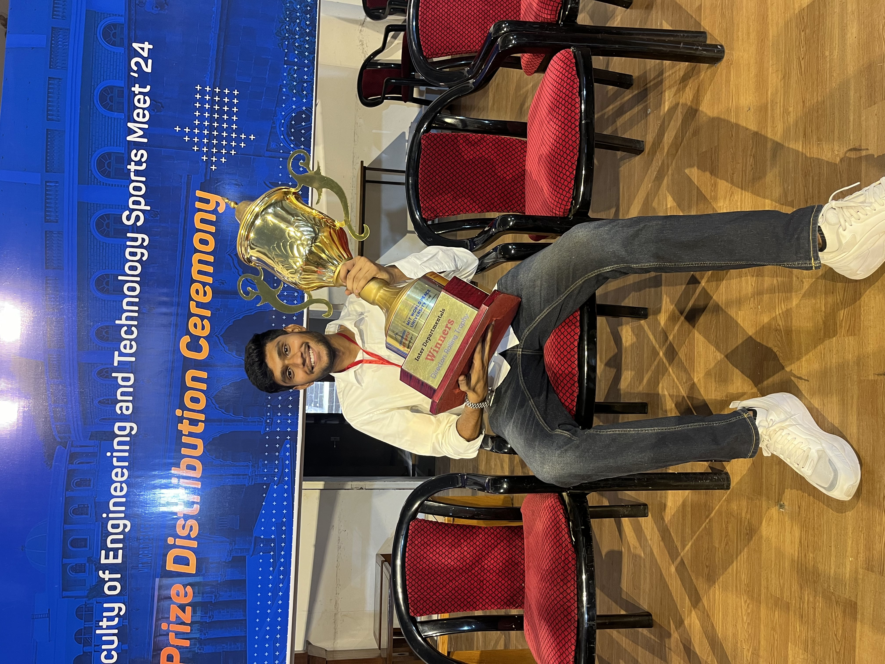

My name is Muni Reddy. I am currently studying at MIT World Peace
University (MIT-WPU). I have a strong interest in web development,
machine learning, data science, and natural language processing.
In addition to my academic pursuits, I am passionate about cricket.
I have had the honor of representing MIT-WPU in various tournaments
as the team captain. This experience has honed my leadership skills
and taught me the importance of teamwork and strategy.I am also
actively involved in organizing college events and currently serve
as an organizer for our college cultural fest, Aarohan. This role
has allowed me to develop my event management skills and contribute
to the vibrant campus life at MIT-WPU.
As a motivated and hardworking student, I am always eager to learn
and take on new challenges. I strive to excel in my studies and
extracurricular activities, and I am committed to achieving my
goals.
Introduction
